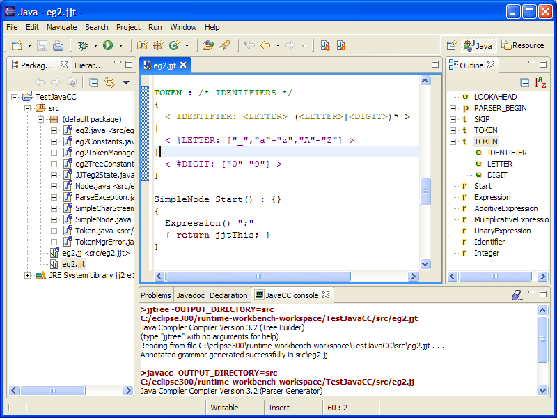
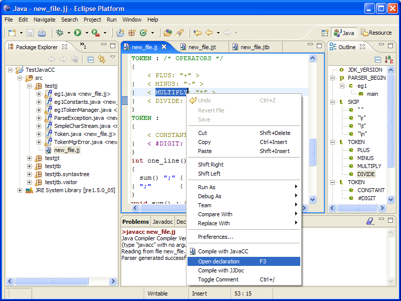
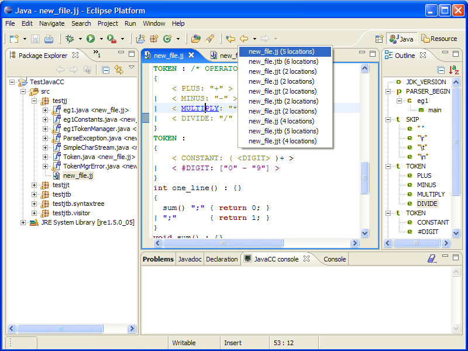
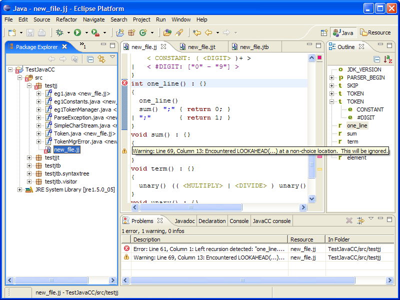
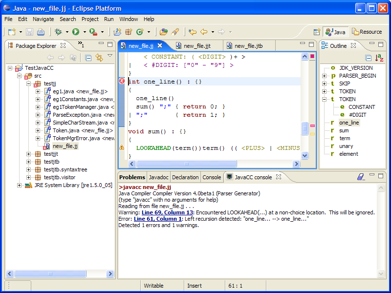

The main features are :
1 - Syntax coloring
2 - Outline
3 - Navigation to definition and back
4 - Errors and warnings reporting
5 - Full output from JavaCC in console
1) Syntax coloring
JavaCC keywords are in dark green; "LOOKAHEAD", "PARSER_BEGIN"...
Java keywords are in dark red; "abstract","boolean","break","byte".
2) Outline

Icons are "o" for Options, "t" for
Token, "e" for Expressions, "r" for Rules, "c" for Class, "m" for Methods.
The .jjt and .jj files are parsed with the JavaCC.jj grammar
given in the examples of JavaCC.
3) Navigation to definition
and back
Select a rule and open context menu (right
clic).
Or press "Ctrl" and let your mouse over an indentifier to show the hyperlink, then click.
Or clic on an identifier and press F3.

You can go back of to last selection if you whish, with the history navigation of Eclipse.

4) Errors and warnings reporting

5) Full output from JavaCC in
console
To show JavaCC console menu "Window" -> "Show
view" -> "Other..."
The JavaCC output is parsed to show hyperlinks.
